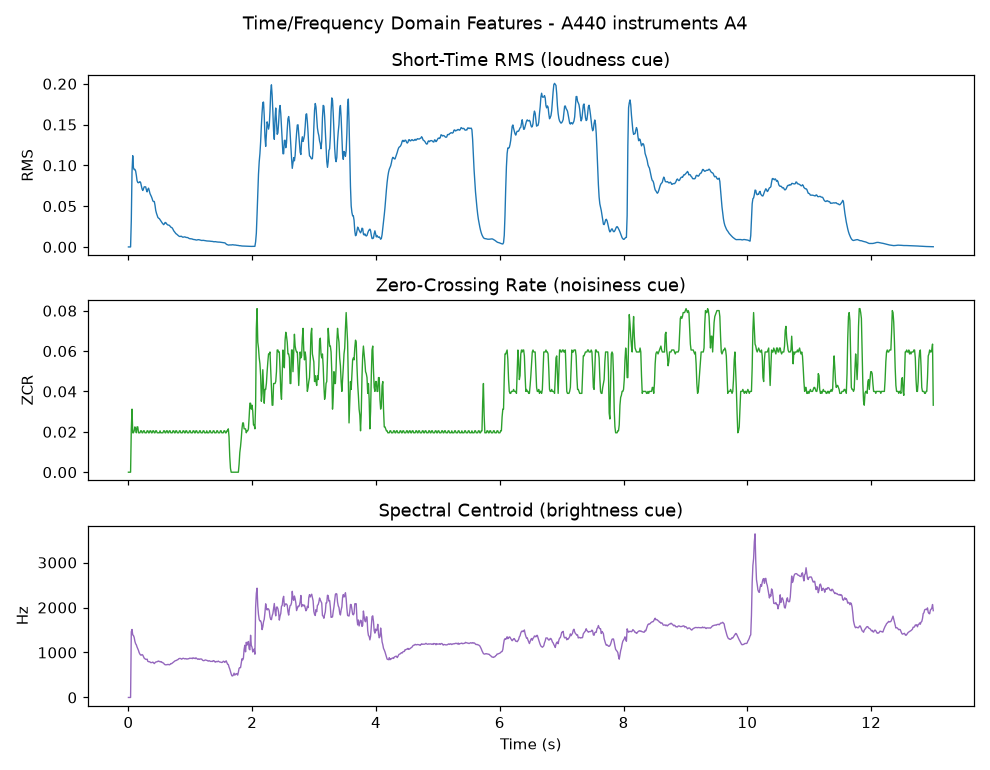
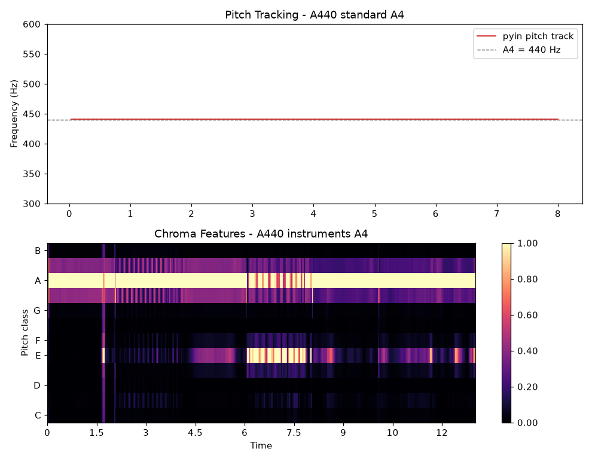

5.2.3 实战：A4 标准音的特征分析工程
前两节完成了理论储备：我们知道如何切帧加窗，也知道该提取哪些特征。本节将按照标准工程工作流，搭建一条完整的 音频帧分析流水线（Audio Frame Analysis Pipeline），并用它分析一段真实素材。
任务定义与素材
分析对象，直接选用我们在第一章使用过的 A440 标准音素材：
- A440_standard_A4.wav：标准 A4 音叉/正弦合成音，44.1kHz / 16bit / 双声道，约 22.7s
- A440_instruments_A4.wav：多种乐器先后演奏的 A4（440Hz），44.1kHz / 16bit / 双声道，约 13s
选择它们的理由有三：其一，素材已在 1.4.5 节 的频谱分析中使用过，读者对其频谱形态已有印象，便于对照；其二，标准音的基频真值已知（440Hz），分析结果 自带标准答案，方便验证流水线的正确性；其三，乐器版包含多件乐器的先后发声，可以观察特征随音色的变化。
流水线设计
沿用 5.1 的工程封装习惯，我们将分析流程组织为四个阶段：
- 加载（Load）：SoundFile 读取并混合为单声道浮点信号
- 切帧加窗（Frame & Window）：手写 NumPy 实现——帧长 1024（23.2ms）、帧移 512（50% 重叠）、汉宁窗，与 5.2.1 的理论一一对应
- 特征提取（Feature Extraction）：Librosa 提取 RMS、过零率、频谱质心、色度特征，pYIN 进行基频跟踪
- 报告（Report）：Matplotlib 输出分析报告图
创建自动化脚本 practice_4_audio_frame_analysis.py。其中切帧的核心实现，仅用两行 NumPy 索引即可完成——这正是数组化计算的优雅之处：
def frame_blocking(y, frame_len, hop_len):
"""Split a 1-D signal into overlapping frames: (n_frames, frame_len)."""
n_frames = 1 + (len(y) - frame_len) // hop_len
idx = np.arange(frame_len)[None, :] + hop_len * np.arange(n_frames)[:, None]
return y[idx]
特征提取部分则直接复用 Librosa 的封装（见 5.1.2）：
rms = librosa.feature.rms(y=y, frame_length=FRAME_LEN, hop_length=HOP_LEN)[0]
zcr = librosa.feature.zero_crossing_rate(y=y, frame_length=FRAME_LEN, hop_length=HOP_LEN)[0]
cent = librosa.feature.spectral_centroid(y=y, sr=sr, n_fft=FRAME_LEN, hop_length=HOP_LEN)[0]
f0, voiced, _ = librosa.pyin(y_seg, fmin=100, fmax=1000, sr=sr,
frame_length=FRAME_LEN * 2, hop_length=HOP_LEN)
运行结果与解读
执行脚本后，将在 Chapter_5/Pictures/ 下生成三张报告图，并在终端输出验证数据：
python practice_4_audio_frame_analysis.py
[frames] standard A4 -> 1955 frames x 1024 samples (23.2 ms frame, 11.6 ms hop)
[verify] FFT peak of one frame : 430.7 Hz
[verify] pyin median pitch : 441.27 Hz (voiced 100%)
[verify] beat track tempo : 92.3 BPM, 16 beats
对照 5.2.1 的理论，最先得到验证的是频率分辨率的限制。对单帧直接取 FFT 峰值，得到 430.7Hz，恰为第 10 个频点（ Hz），与 440Hz 真值偏差近 10Hz。而 pYIN 基频跟踪给出 441.27Hz，100% 的帧被判定为有声段，与真值的偏差仅 0.3%，在乐器实录的正常音分误差范围之内。两组数字放在一起，"为什么需要专门的基频跟踪算法" 就有了最直观的答案。
图 5-13（见 5.2.1） 已展示了加窗对频谱泄漏的抑制效果，此处不再重复。剩余两张报告图如下：

图 5-14 乐器版 A4 的时域与频域特征曲线（RMS / 过零率 / 频谱质心）
图 5-14 中，RMS 曲线的台阶状起伏，清晰地标记了各件乐器的进入与退出；过零率在强奏段（约 2~4s）显著抬升，对应更丰富的谐波与瞬态成分；频谱质心则在 500~3300Hz 之间摆动——约 10s 处质心的尖峰，正对应一件高音乐器的进入。三条曲线合在一起，便是这段音频在特征维度上的完整轮廓。

图 5-15 基频跟踪（上，紧贴 440Hz 参考线）与色度特征热力图（下）
图 5-15 上半部分的基频轨道，几乎与 440Hz 参考线重合。下半部分的色度热力图更有意思：A 音级上横贯着一条明亮主带——无论换哪件乐器演奏，响的都是 A4。而 E 音级（A 的纯五度，见 1.4.1）的次级亮带，则来自各乐器泛音列中的五度泛音成分。这正是色度特征 "折叠八度、直指音名" 的能力体现。
至此，一条不到百行的流水线，已经完成了从原始 PCM 数据到可解释音乐特征的完整提取过程。
小结与延伸
本节工程虽小，却已具备生产级音频分析的全部骨架：加载、切帧、加窗、特征、报告。需要批量处理时，只需将加载环节替换为文件遍历；需要实时分析时，将数据源替换为 PyAudio 的流式回调即可（5.1.2 的播放器工程已经演示过流控的基本形态）。
如果想亲自体验切帧与加窗的效果，本章还提供了配套的 在线演示（见【在线展示】页）：可以直接在浏览器里上传任意音频，拖动滑块调整帧长与窗函数，实时观察频谱泄漏的变化。
下一节，我们将视线从音频转向视频：视频帧的分析，既有与音频相通的思路，也有图像维度带来的新问题。